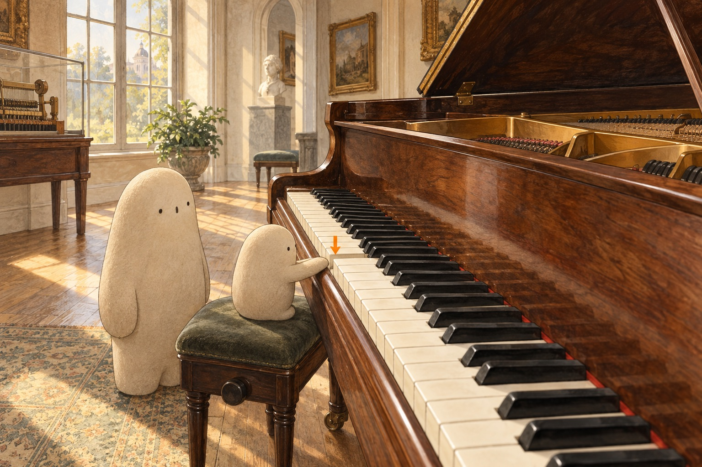

LOOK TOGETHER · 01
Where could a note be hiding?
Find Little's hand and the orange arrow. One key moves only a little. Where would you look for what happens next?
A little explanation & something to try
The piano is not a box of stored notes. Pressing a key starts moving parts inside. In an acoustic piano, those parts send a small hammer toward metal strings. The next picture lets us look at a model of that hidden motion.
Try together. Pretend the tabletop is a piano key. Lower one finger quietly, then lift it. Tell your grown-up what you imagine moving inside.